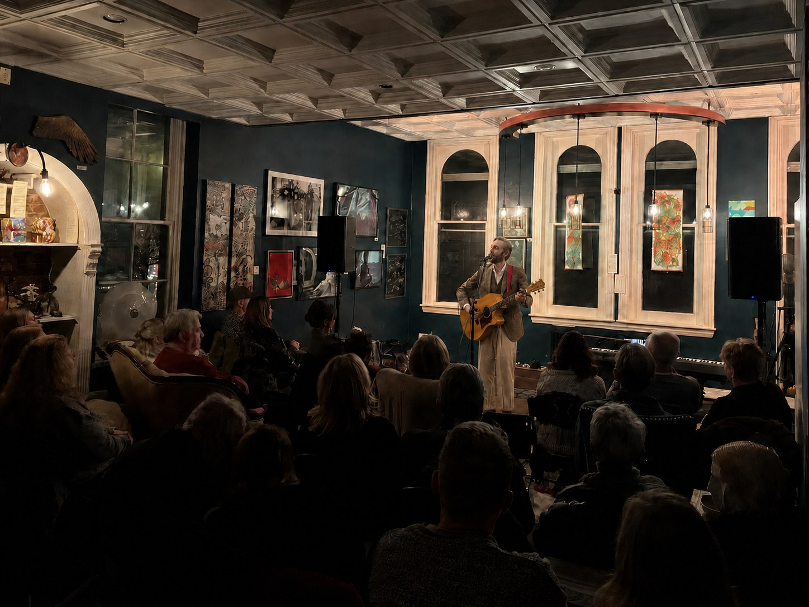
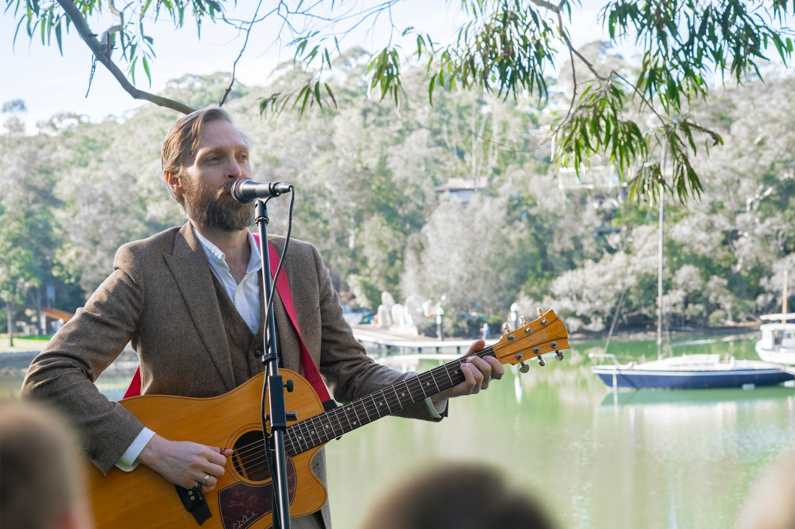

Main upbeat show
Three sets of rock, pop, acoustic favourites, tavern songs and sea shanties, mixed throughout the night for contrast and momentum.
See the main repertoire →
Singer · Guitarist · Sydney & Hunter Valley
Classic rock, pop, tavern favourites and sea shanties — moving between acoustic guitar and full backing tracks with electric guitar.

Live music with range
Performing classic rock, pop and tavern classics including fun sea shanties, I move between acoustic guitar and full backing tracks with electric guitar for a bigger, more energetic sound.
I’m also available as a duet with R&B singer and guitarist Daniel Ross for even more variety!
My jazz set is available on request too and works well for canapés and cocktail hours.
Bookings range from a single set to a full 3- or 4-set show. I provide my own PA and equipment and suit pubs, clubs, wineries, breweries, weddings and private functions.
Listen
A cross-section of the current show: rock, pop, soul, acoustic tavern material and the optional jazz sound. Acoustic clips feature Robert; backing-track previews demonstrate the full-production arrangements used live.
One act · several gears
Three sets of rock, pop, acoustic favourites, tavern songs and sea shanties, mixed throughout the night for contrast and momentum.
See the main repertoire →A smoother fourth set of upbeat jazz and swing standards for canapés, cocktail hours, lounges and early-evening arrivals.
See the jazz set →Two singers and two guitarists, with bonus R&B, soul and pop material for clients wanting more vocal and musical variety.
See duo bonus songs →Packages
One full live set for shorter functions, featured entertainment or concentrated venue bookings.
Two full sets with a scheduled break, well suited to shorter pub, brewery, winery and private-function bookings.
The complete main upbeat show across an extended booking, with breaks between performances.
The three-set main show plus the optional jazz & swing set for a longer event with an additional change of atmosphere.
Two singers and guitarists with extra R&B, soul and pop repertoire. Available across single and multi-set bookings.
From intimate rooms to full events
At home in pubs, wineries, weddings and private functions.

Practical details
Repertoire47-song main show across three sets, plus an optional 19-song jazz & swing set and 20 duo bonus songs. View the full repertoire →
LocationBased in Sydney and the Hunter Valley. Available across NSW.
EquipmentProfessional PA, instruments and musical equipment supplied and operated by me.
Set upApproximately 2 × 2 metres with access to power. Outdoor performances require adequate protection from sun and weather.
InsurancePublic liability insured up to $2 million. Venue-specific permit, induction or compliance requirements can be arranged in advance.